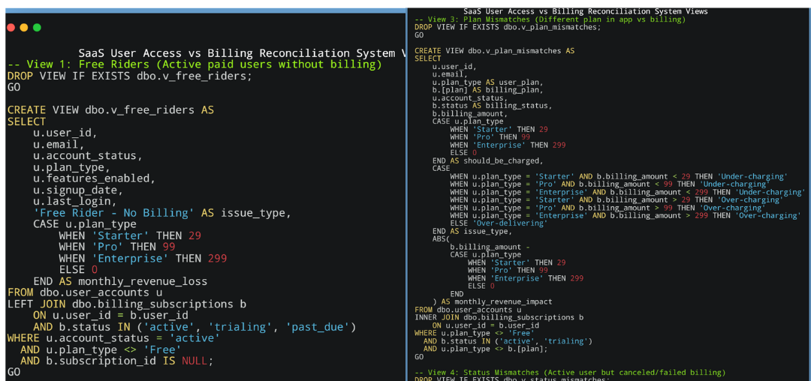

SaaS User Access vs Billing Reconciliation System
The Challenge
SaaS companies lose 5-10% of monthly recurring revenue to billing errors—users with active system access who aren't being billed, or inactive users still being charged. Manual reconciliation is time-consuming (20-40 hours monthly), error-prone, and usually happens too late to recover lost revenue. Finance teams need automated systems to catch discrepancies before they compound.
What I Built
Automated reconciliation system that cross-references user access logs against billing records to identify revenue leakage. Built end-to-end solution combining SQL database design and Python ETL pipelines analyzing 500 users across 7 issue categories.
Business Impact:
• $260,388 in annual revenue at risk identified across 171 billing discrepancies
• $3,292/month in quick wins recoverable within one week
• Automated 20-40 hours of monthly manual reconciliation work
• System pays for itself recovering just 2% of identified leakage
Technical Approach
SELECT u.user_id, u.email, u.plan_type,
CASE u.plan_type
WHEN 'Starter' THEN 49
WHEN 'Pro' THEN 99
WHEN 'Enterprise' THEN 299
END as expected_monthly_revenue
FROM user_accounts u
LEFT JOIN billing_subscriptions b ON u.user_id = b.user_id
WHERE u.account_status = 'active'
AND u.plan_type != 'Free'
AND b.subscription_id IS NULL;
Designed normalized SQL database with two core tables (user_accounts, billing_subscriptions) and 9 analytical views implementing reconciliation logic for each issue type. Python ETL pipeline automates data population and exports results. Tableau dashboard provides executive summary, issue breakdowns by type, user health matrix heatmap, and detailed investigation tables with recommended actions.
- Overview Automated reconciliation system identifying $260K+ annual revenue leakage by matching user access against billing records. Categorizes 171 discrepancies across 7 issue types, quantifies financial impact, and provides prioritized action recommendations.
- Technologies Used SQL Server (Database Design & Queries), Python (Pandas, ETL Pipeline), Tableau (Interactive Dashboards), Excel (Data Validation)
- Skills Demonstrated Revenue leakage analysis, SQL database design, complex SQL queries (CTEs, joins, window functions), Python ETL automation, financial impact quantification, Tableau dashboard development, SaaS business operations, prioritization frameworks
- Business Impact Identified $260K+ annual revenue at risk, automated 20-40 hours monthly manual work, created prioritized action framework enabling finance teams to focus on high-impact fixes, system ROI positive after recovering just 2% of identified leakage